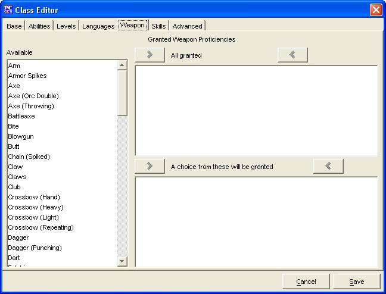

The Weapons Tab is used to add a Granted Weapon Proficiencies for the Class being created.
The three Granted Weapon Proficiencies windows, Available, All Granted and A choice from these will be granted are used to create a list of Granted Weapon Proficiencies.
The Cancel and Save buttons, which appear on every tab, are used to either cancel the Class creation or save it to the customClasses.lst file.